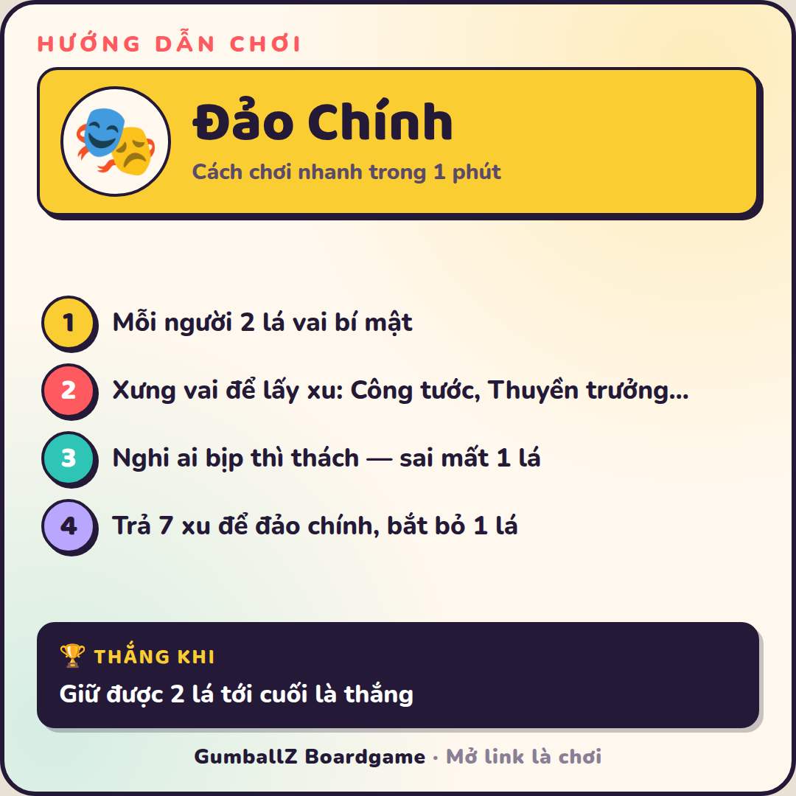

Mục tiêu: là người cuối cùng còn lá úp. Mỗi người có 2 lá vai úp (mạng sống) và 2 xu. Mất cả 2 lá là bị loại.
Tới lượt, chọn 1 hành động. Bạn được xưng bất kỳ vai nào – kể cả vai không có trong tay (bịp 🎭).
Công tướcDuke Công tước (Duke)Thu thuế +3 · chặn Xin viện trợSát thủAssassin Sát thủ (Assassin)Trả 3 xu: Ám sát
Thuyền trưởngCaptain Thuyền trưởng (Captain)Cướp 2 xu · chặn Cướp
Đại sứAmbassador Đại sứ (Ambassador)Đổi vai · chặn Cướp
Nữ bá tướcContessa Nữ bá tước (Contessa)Chặn Ám sát
Ai cũng làm được
- 🪙 Thu thuế dân: +1 xu, không ai cản.
- 🤲 Xin viện trợ: +2 xu, người xưng Công tước chặn được.
- 💥 Đảo chính: trả 7 xu, bắt một người bỏ 1 lá, không ai cản. Có từ 10 xu là bắt buộc Đảo chính.
Nghi (🤨) và chặn (🛡️)
- Ai xưng vai thì ai cũng có thể nghi. Người xưng lật lá: có thật → người nghi mất 1 lá, người xưng xáo lá đó vào chồng và bốc lá mới; không có → người xưng mất 1 lá, hành động hỏng (được trả lại xu).
- Lời chặn cũng là xưng vai nên cũng bị nghi được.
- Bị chặn mà không ai nghi thì hành động hỏng – Ám sát bị chặn vẫn mất 3 xu.
- Bị ám sát mà nghi sai thì có thể mất cả 2 lá một lượt – cẩn thận!
Mẹo
- Để ý lá đã lật: cả bộ chỉ có 3 lá mỗi vai. Ai xưng vai đã lật đủ 3 lá thì chắc chắn bịp.
- Bật Tự cho qua để khỏi phải bấm khi chuyện không dính tới mình.